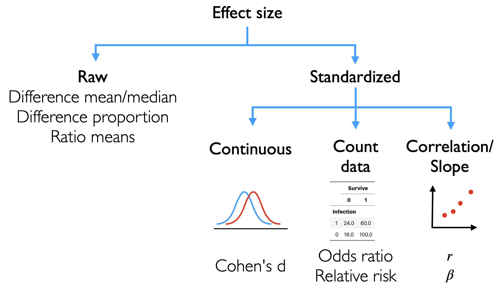

Effect size#
The significance test will give you an idea of whether the observed data is likely to have come from a distribution where there is no difference.
A low p-value suggests that the observed data is less likely to come from a null distribution and the differences we observe may not be due to random chance
However, a low p-value does not tell us the magnitude of the difference observed (effect size) e.g whether a decrease in cholesterol is small or large
To get an idea of how big of an change is observed, we can look at the effect size, which can be expressed as a raw or standardized statistic
raw: absolute difference between groups (e.g. difference of means)standardized: ratio of the difference between groups and the noise/variation
The standardized effect size can be thought of as a a ratio of the signal (e.g. real differences) to noise (e.g. unaccounted variation)
There are different measures of effect sizes, depending on what is being compared.
Shown below are some examples of
rawandstandardizedeffect sizes.We will explore these different standardized effect sizes for the different hypothesis tests

Data preparation#
To get an intuition of effect sizes, we will use the diet/cholesterol dataset to demonstrate the concept of effect sizes for continuous variables in a simple case comparing continuous values (cholesterol levels) in 2 different diet groups (cornflakes and oatbran)
https://myweb.uiowa.edu/pbreheny/data/oatbran.html
Show code cell source
library(tidyverse)
data <- read_tsv("https://raw.githubusercontent.com/kennethban/dataset/main/oatbran.tsv")
data_grouped <- data %>%
gather(CornFlakes, OatBran, key="treatment", value="effect") %>%
mutate(treatment=as.factor(treatment))
head(data_grouped)
tail(data_grouped)
── Attaching core tidyverse packages ───────────────────────────── tidyverse 2.0.0 ──
✔ dplyr 1.1.1 ✔ readr 2.1.4
✔ forcats 1.0.0 ✔ stringr 1.5.0
✔ ggplot2 3.4.2 ✔ tibble 3.2.1
✔ lubridate 1.9.2 ✔ tidyr 1.3.0
✔ purrr 1.0.1
── Conflicts ─────────────────────────────────────────────── tidyverse_conflicts() ──
✖ dplyr::filter() masks stats::filter()
✖ dplyr::lag() masks stats::lag()
ℹ Use the conflicted package (<http://conflicted.r-lib.org/>) to force all conflicts to become errors
Rows: 14 Columns: 2
── Column specification ─────────────────────────────────────────────────────────────
Delimiter: "\t"
dbl (2): CornFlakes, OatBran
ℹ Use `spec()` to retrieve the full column specification for this data.
ℹ Specify the column types or set `show_col_types = FALSE` to quiet this message.
| treatment | effect |
|---|---|
| <fct> | <dbl> |
| CornFlakes | 4.61 |
| CornFlakes | 6.42 |
| CornFlakes | 5.40 |
| CornFlakes | 4.54 |
| CornFlakes | 3.98 |
| CornFlakes | 3.82 |
| treatment | effect |
|---|---|
| <fct> | <dbl> |
| OatBran | 3.49 |
| OatBran | 3.84 |
| OatBran | 5.26 |
| OatBran | 3.73 |
| OatBran | 1.84 |
| OatBran | 4.14 |
We will plot the values to see how they differ between the 2 dietary groups
Show code cell source
# adjust size of the image output
options(repr.plot.width=8, repr.plot.height=8)
data_grouped %>%
ggplot(aes(x=treatment, y=effect)) +
geom_boxplot() +
geom_point(color="red", size=5) +
theme_grey(base_size=16)
1. Raw effect size#
The simplest way is to find the difference of means between the 2 groups. In this case, we calculate the means of each group then we find the difference of the means
difference of means = abs(mean group 1 - mean group 2)
Show code cell source
data_grouped %>%
group_by(treatment) %>%
summarize(mean = mean(effect)) %>%
summarize(raw_effect = abs(diff(mean)))
| raw_effect |
|---|
| <dbl> |
| 0.3628571 |
We can also obtain the 95% confidence interval for this difference of means using a function from the rstatix library
data_grouped %>%
rstatix::t_test(effect ~ treatment,
detailed = T) %>%
select(conf.low, conf.high)
| conf.low | conf.high |
|---|---|
| <dbl> | <dbl> |
| -0.4251218 | 1.150836 |
2. Standardized effect size#
To standardize the effect size for the 2 groups, we can estimate the signal to noise ratio, which is the difference of means divided by the combined variation in both groups. This known as Cohen’s d statistic
For independent samples:
We can use the cohens_d function from the effectsize library to calculate the Cohen’s d statistic for the effect size of means between 2 groups and the uncertainty in the estimate (95% CI)
Show code cell source
effectsize::cohens_d(effect ~ treatment,
data = data_grouped)
| Cohens_d | CI | CI_low | CI_high |
|---|---|---|---|
| <dbl> | <dbl> | <dbl> | <dbl> |
| 0.3578947 | 0.95 | -0.3925678 | 1.101621 |
To get sense of the magnitude of the effect size, we can pass the Cohens_d value to the interpret_d function
Show code cell source
effectsize::cohens_d(effect ~ treatment,
data = data_grouped) %>%
pull(Cohens_d) %>%
effectsize::interpret_cohens_d()
How does the signal and noise affect the effect size?#
To see how the size of the signal (difference of means) and the noise (variation in the values) affects the standardized effect size, we will simulate normally distributed values of 2 groups with a range of differences and variations in the values
Show code cell source
effect_size <- function(n, mean_1, mean_2, sd_1, sd_2) {
simulation <- tibble(normal=rnorm(n,mean_1, sd_1), diet=rnorm(n,mean_2, sd_2)) %>%
pivot_longer(cols=c("normal","diet"), names_to = "group", values_to = "glucose") %>%
mutate(group = as.factor(group))
es <- effectsize::cohens_d(glucose ~ group, data=simulation) %>%
pull(Cohens_d) %>%
abs %>% round(2)
interpretation <- effectsize::interpret_cohens_d(es)
text <- glue::glue("d: {es} size: {interpretation}")
plot <- simulation %>% ggplot(aes(x=glucose, fill=group)) +
geom_density(alpha=0.5) +
ggtitle(text)
return(plot)
}
We can plot the distributions and compare how the difference of means and the degree of variation affects the standardized effect sizes
Show code cell source
# plot a grid of different signal and noise combinations
library(gridExtra)
# adjust size of the image output
options(repr.plot.width=15, repr.plot.height=10)
# plot a grid of distributions
# the signal (difference of means) increases from left to right
# the noise (standard deviation) decreases from top to bottom
grid.arrange(
effect_size(n=1000, mean_1=9, mean_2=10, sd_1=5, sd_2=5),
effect_size(n=1000, mean_1=9, mean_2=15, sd_1=5, sd_2=5),
effect_size(n=1000, mean_1=9, mean_2=20, sd_1=5, sd_2=5),
effect_size(n=1000, mean_1=9, mean_2=10, sd_1=2, sd_2=2),
effect_size(n=1000, mean_1=9, mean_2=15, sd_1=2, sd_2=2),
effect_size(n=1000, mean_1=9, mean_2=20, sd_1=2, sd_2=2),
effect_size(n=1000, mean_1=9, mean_2=10, sd_1=0.5, sd_2=0.5),
effect_size(n=1000, mean_1=9, mean_2=15, sd_1=0.5, sd_2=0.5),
effect_size(n=1000, mean_1=9, mean_2=20, sd_1=0.5, sd_2=0.5),
ncol=3)
Attaching package: ‘gridExtra’
The following object is masked from ‘package:dplyr’:
combine
We can see that as the noise decreases, the standardized effect size increases